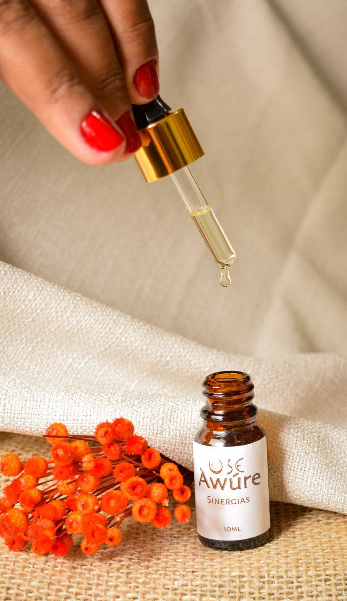

Key visual.
A customer said she did not feel represented by any other natural cosmetics brand. USE Àwúre wanted to be the one she would recognise as hers.
Photography leads the design. Golden fabrics, warm skin tones and botanical textures set the palette, and the type and colours are taken from the pictures.
The founder passed on that customer's words about the product: she looks at it and knows it was made for her.
The work
Product pieces for the Sinergias line and the layout that shared the customer feedback.



Three decisions
Listen to the name
Before any layout I studied the brand's universe: the Yoruba name, the natural ingredients and the celebration of Black beauty.
Let the photos lead
The brand's imagery is rich in gold, linen and plants. The layouts frame those pictures and stay out of their way.
Repeat until it is familiar
Product shots and social pieces follow the same warm, earthy logic, so the brand is recognised wherever it appears.
“The nicest feedback I got was from an older Black woman who said: ‘[…] I look at it and I know it’s for me.’”